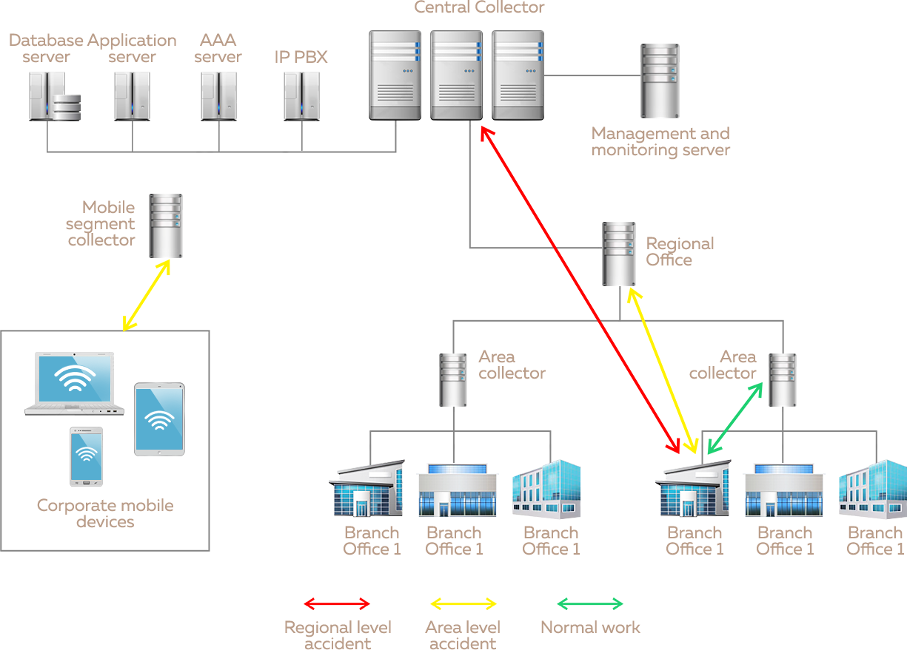

L2/L3 Tunneling through different WAN networks/tunneling through any IP network
BANDWIDTH SUMMATION
Summation of subchannels’ bandwidth in one general channel bandwidth
GUARANTEES
Ensure the consistency of data packets regardless of the transport network
RESERVATION
Reservation of the data channels
SUPPORT
Supporting of all data types: digital data, video/voice data, VoIP etc.
ISOLATION
Full VLAN isolation
AUTOMATION
Full automation of remote network installation and management
MSTP
UNIQUE POINTS
COREMSTPCOMPONENTS
MONITORING
AND MANAGEMENT SYSTEM
Monitoring and management module provides
full MSTP control with logging and status control
CLIENTMODULE
Client MSTP module based on widely used vendor neutral
firmware. All MSTP component fully integrated into firmware –
configuration files, netifd, network drivers, web interface etc.
BTEST
BTest – own bandwidth tester is an application for MSTP channel testing. BTest provides possibility for simplex and duplex
UDP/
TCP test traffic generation and assessment with full quality controls.
ALOOP
ALoop – Anti Loop – software complex (kernel module + userspace process) works on client device and provides functions for
traffic monitoring. ALoop scan traffic from client LAN to MSTP to detect client traffic loops. ALopp can block incorrect
traffic for specified time to avoid network faults. After loop fix ALoop restore MSTP transmitting with full action
log.
COMPONENTSList of possible MSTP components in general implementation
PRINCIPALSCHEME
NORMAL LOGIC SCHEMEAND WORK IN CASE OF CONNECTION BREAKS (ACCIDENTS)
